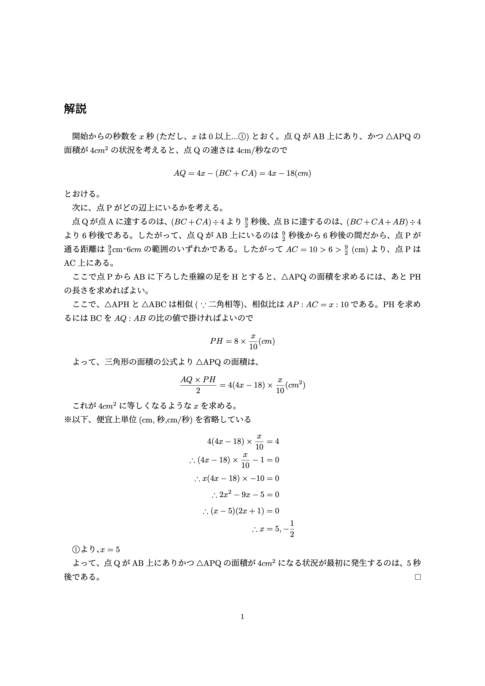
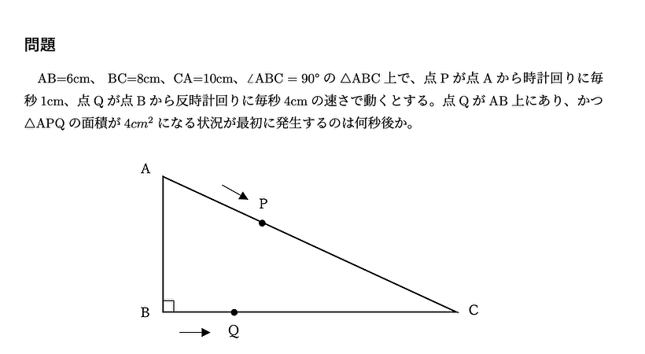
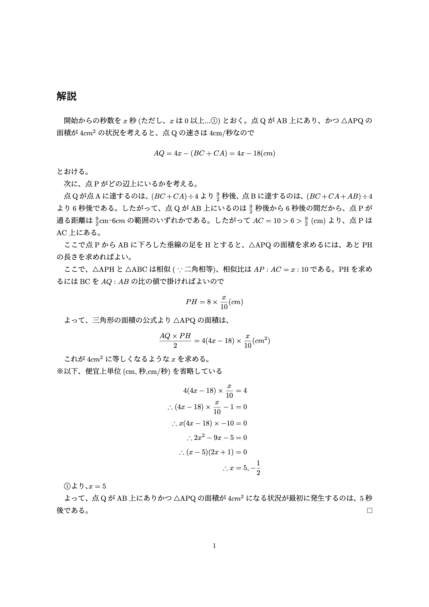

自己紹介
思いついたITサービスを試作するのが好き。慶應義塾大学 環境情報学部の4年生です。ニューロダイバーシティの推進によって、一般的には「発達障害」とされるマイノリティも含めてあらゆる特性の人が輝ける「生きづらさのない社会」を目指す「一般社団法人ニューロダイバーシティ協会」の代表理事を務めています。所属している SFCすずかんゼミでも、このプロジェクトを扱っています。
GitHub ▶ https://github.com/yuki-keio/
WEBサービス
開発したWebアプリ・Webサイトの一覧です
-
HOT! 2024~
- オセロ通信対戦
- オセロAIと対戦できるWebサイト
- スマートオセロ盤
- タスク管理AI
Google Carender APIを用いて、ChatGPTからGoogleカレンダーを操作できるようにするGPTsです。本GPTs以外にも、いくつか人気のGPTsを公開しています
HOT! WEBサイト（2022/4~）
- 一般社団法人ニューロダイバーシティ協会・公式ホームページマスコットキャラクターやファビコンは友人および協会メンバーの制作です
Wiki（2022/3）
- 発達Wiki
- 3次以下の関数の最大最小を求めるツール HOT! 2021/7
- 正規表現も使える 文字列置換WEBアプリ
- 文字列中の引用符をエスケープするツール HOT!
- 日本語URLをXなどのSNSで使用可能な形式へエンコード デビュー作 (2021)
- コマンド操作可能で、かつ視覚障害があっても使いやすい高速タイマー
サーバーサイドの処理を実装することで、通信対戦を可能にしました
アルファベータ法を用いてオセロAIを実装しました
Claudeを用いることで、プロトタイプは1分で実装しました
HOT! GPTs
iOSアプリ
開発したiOS（iPhone・iPad）向けアプリの一覧です
-
サービス終了済み
- 専門家同士で会話できるSNSアプリ・Senhana
その他
その他の作品です
LaTeX
2021/9

数学：動点問題
